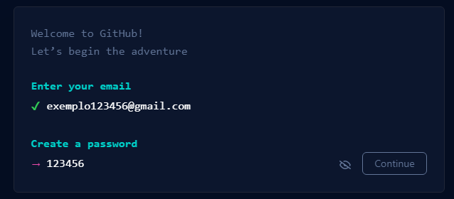
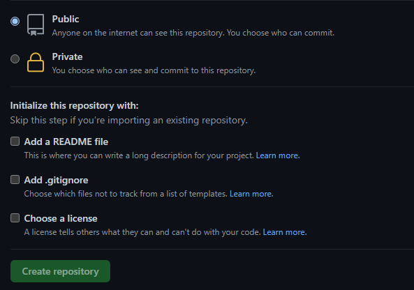

Git Hub
GitHub é uma plataforma de hospedagem de código-fonte e arquivos com controle de versão usando o Git. Ele permite que programadores, utilitários ou qualquer usuário cadastrado na plataforma contribuam em projetos privados e/ou Open Source de qualquer lugar do mundo. GitHub é amplamente utilizado por programadores para divulgação de seus trabalhos ou para que outros programadores contribuam com o projeto, além de promover fácil comunicação através de recursos que relatam problemas ou mesclam repositórios remotos.
Em 4 de junho de 2018, a Microsoft comprou a plataforma por US$ 7,5 bilhões, equivalente a R$ 27,225 bilhões com dólar cotado a R$ 3,63 na época da compra
Como criar sua conta
Para criar sua conta no GitHub não é nada de novo, pois é o mesmo processo d criação da maioria das contas hoje em dia.
Abra o site e clique em "Sign Up"
Preencha com seus dados

(Lembrando que não serão aceitos caracteres especiais como Ç e acentos). Feito isso, sua conta já está criada e você está pronto para começar
Como criar um repositório
1°-Logue na sua conta
2°-Clique em new e após isso você já estará editando seu repositório
3°-Nesse momento você estará definindo os aspectos de seu repositório, tais como se ele é privado e arquivos adicionais como um readMe por exemplo. Finalizando ao clicar em "create repository".

Para aqueles que preferirem, segue o tutorial em vídeo